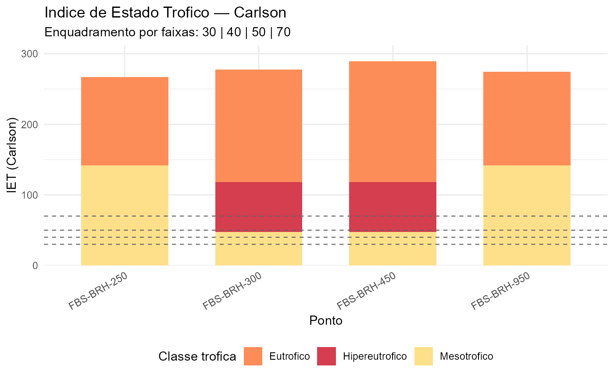
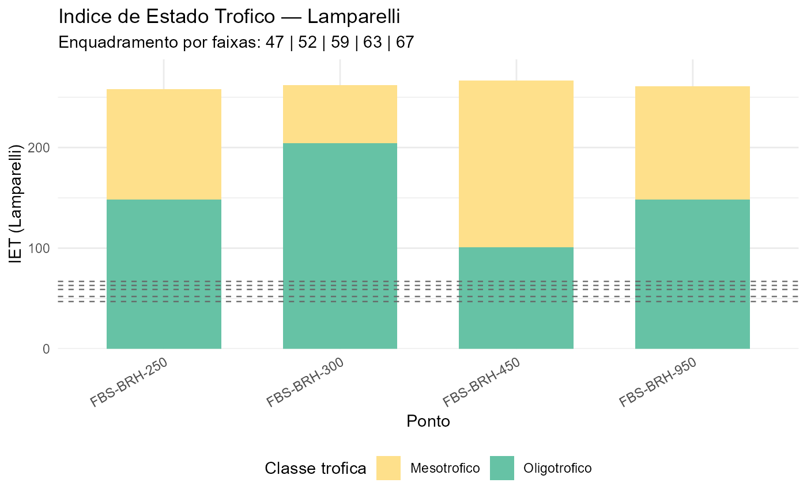

Grafico de barras horizontais ou colunas verticais para o IET/TSI,
com coloracao por classe trofica. Aceita resultados das funcoes
iet_carlson() ou iet_lamparelli().
Arguments
- df
Data frame retornado por
iet_carlson()ouiet_lamparelli(), ou qualquer data frame com uma coluna de IET numerica e a colunaponto.- iet_col
Character; nome da coluna de IET. Se
NULL(default), detectada automaticamente.- method
Character; metodo de classificacao trofica:
"carlson"(default) ou"lamparelli".- orientation
Character;
"vertical"(default) ou"horizontal".- facet
Character ou
NULL; coluna para facetar (ex.:"rio"). DefaultNULL.
Details
A funcao detecta automaticamente a coluna de IET: procura por
"IET", "TSI", "IET_Carlson" ou "IET_Lamparelli".
Tambem e possivel especificar o nome via iet_col.
As faixas de classificacao trofica seguem o metodo escolhido:
Carlson (1977): Ultraoligo (<30), Oligo (30-40), Meso (40-50), Eutro (50-70), Hipereutro (>70).
Lamparelli (2004): Ultraoligo (<47), Oligo (47-52), Meso (52-59), Eutro (59-63), Supereutro (63-67), Hipereutro (>67).
See also
iet_carlson(),
iet_lamparelli(),
plot_iqa()
Other visualization-tools:
plot_map_quality()
Examples
# \donttest{
data("wq_demo", package = "tikatuwq")
df_iet <- iet_carlson(wq_demo, .keep_ids = TRUE)
plot_iet(df_iet, method = "carlson")

df_lamp <- iet_lamparelli(wq_demo, ambiente = "rio", .keep_ids = TRUE)
plot_iet(df_lamp, method = "lamparelli")

# }